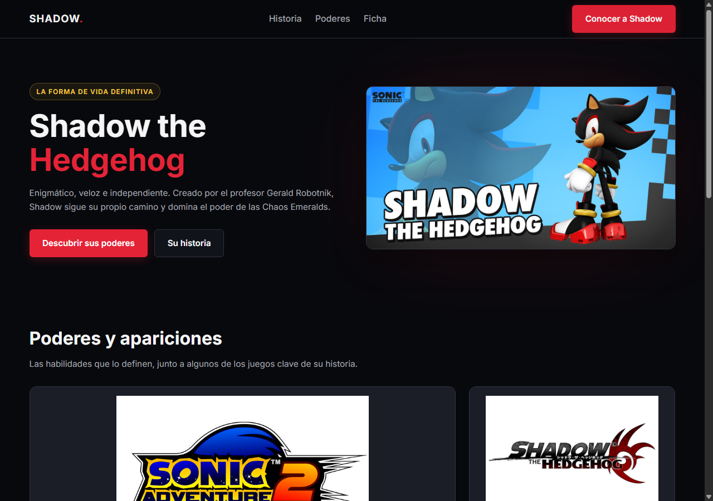

01 / Proyecto destacado
Diseño responsive

Shadow the Hedgehog · Sitio informativoHTML · CSS · Mobile First
Una identidad visual inspirada en el personaje
Sitio informativo adaptable, construido alrededor de una paleta oscura y una estructura que se reorganiza según el tamaño de pantalla.